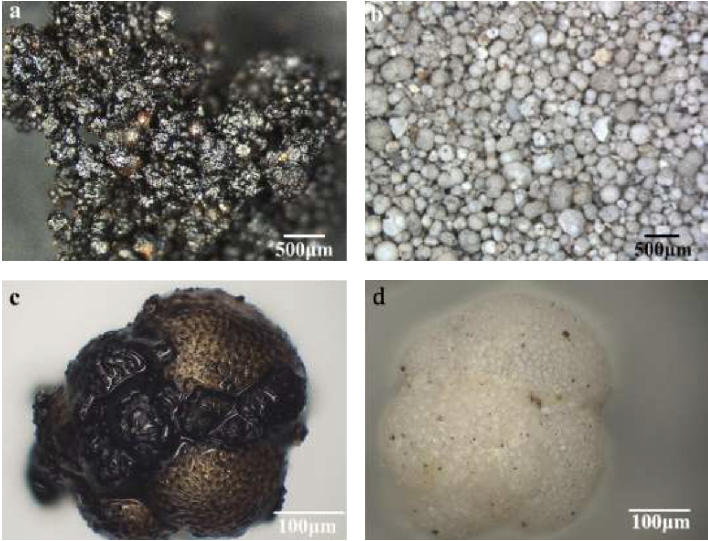
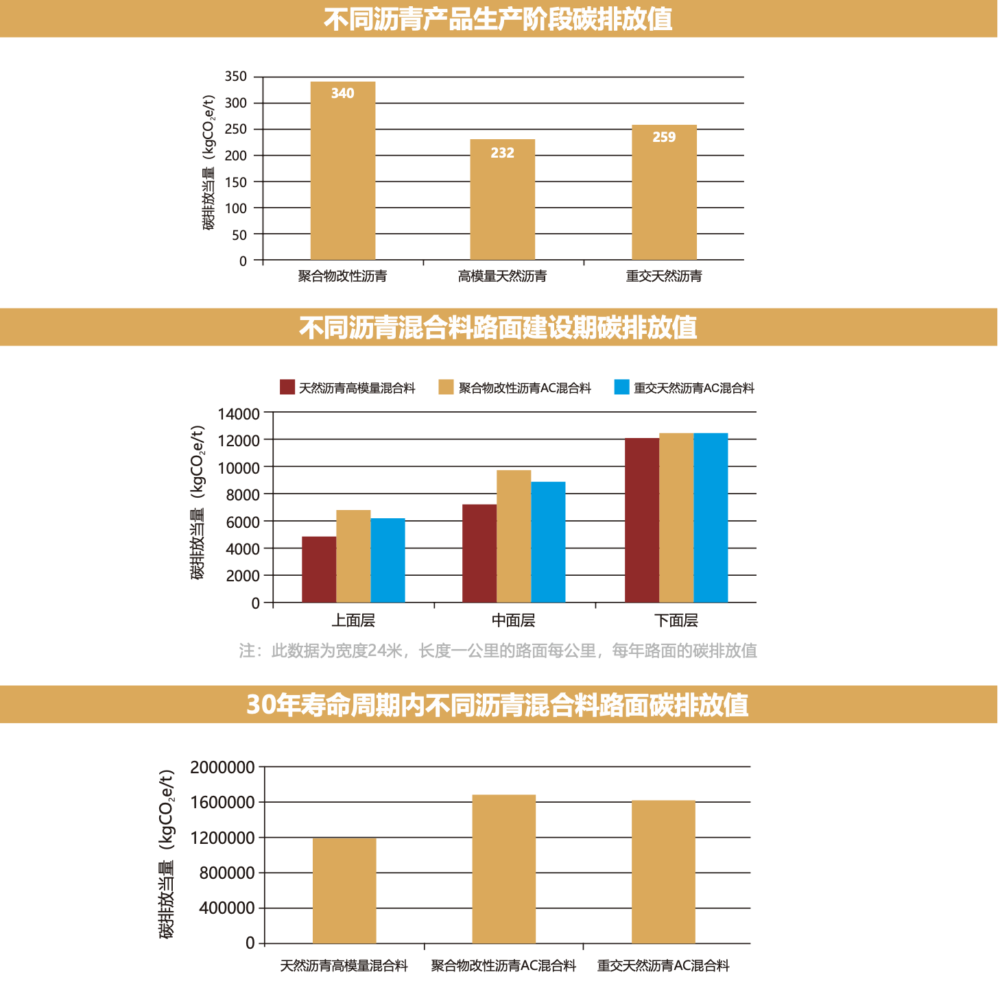

岩沥青的形成
研究团队发现，岩沥青是由沥青包裹有孔虫化石表面，并经过化石内部通道，浸润其内部腔体及通道，而形成的有机物与无机物紧密伴生的 结构。
岩沥青的形成是构造运动，原油迁移，原油浸渍有孔 虫沉积地层，以及微生物的氧化分解等共同作用的结果。
图片及数据来源:Guoqiang Ma,Junyan Wang ,Lin He 《the nature of the Indonesian carbonate asphalt rocks and its insights into the separation processes》 [J] Journal of petroleum Science and Engineering，Volume 195(2020)107752.
有孔虫：
五亿多年前产生于海洋中，种类繁多，是重要的海洋浮游生物，能分泌钙质和硅形成外壳，壳上 有一个大孔和很多细孔，以便伸出伪足，故称为有孔虫，主要以硅藻、菌类、甲壳类幼虫等为食物，是浮 游生物中重要的组成部分。
有孔虫化石：
有孔虫尸体大量地向海床落下，蕴含丰富矿物外壳以化石形态沉积。沉积的矿物质颗粒表 面有蜂窝状凹槽，内部呈现多孔洞结构，有通道联通球体表面和内部孔洞。
天然沥青--低碳环保
原材料阶段----天然沥青的开采，无原油开采及炼制过程，其碳排放值仅占石油沥青的18%。
运输阶段----天然沥青可常温固态运输，其运输能耗远低于高温储运的石油沥青。
产品阶段----高模量天然沥青HMB的单吨碳排放值比常规聚合物改性沥青低31.8%; 重交天然沥青NNB的单吨碳排放值比聚合物改性沥青低23.8%。
30年全寿命周期内
每公里的天然沥青高模量混合料路面比传统聚合物改性沥青混合料路面碳排放当量值节约29.7%
每公里的重交天然沥青AC混合料路面比传统聚合物改性沥青混合料路面碳排放当量值节约3.8%